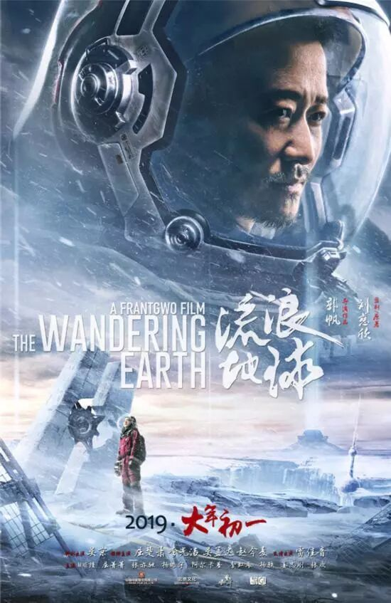
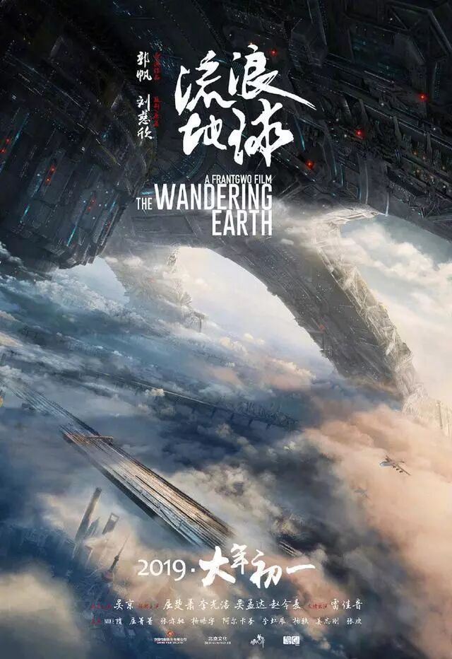
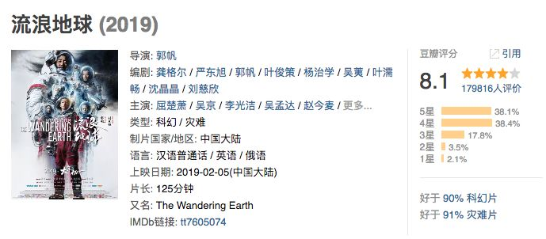
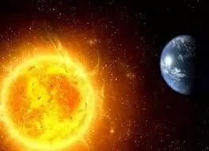
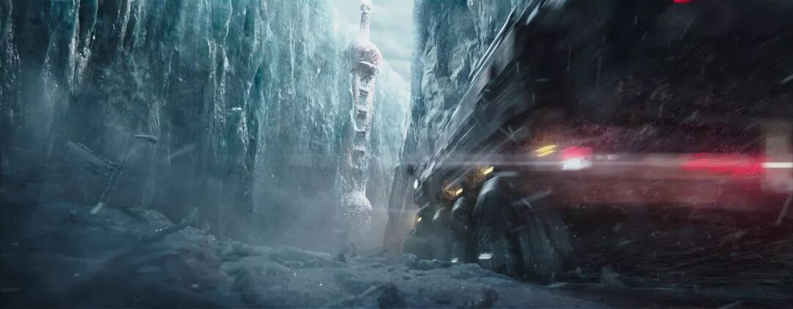
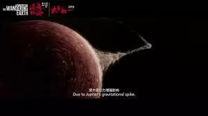
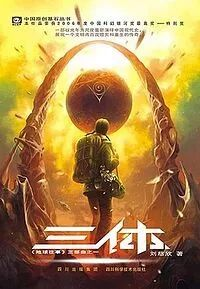

1.
我从未奢望过国产游戏中会涌现出像《文明》一样优秀而复杂的硬核游戏作品，《太吾绘卷》做到了。
我也从未奢望过国产电影能拍出《火星救援》一样优秀的科幻作品，《流浪地球》做到了。

不管是《太吾绘卷》的作者茄子，还是《流浪地球》的导演郭帆，都是在大家都不太看好的情况下，卧薪尝胆好几年，最终把一个极其高水准的作品呈现给大家。
这样的作品我们当然还是可以挑出缺点，跟历史上最优秀的作品之间当然还是有些许的差距。但是我们知道这已经是里程碑式的大跨越。豆瓣8.1的分数，已经证明了大家对这部电影的认可。

从此以后，再也没有人能找借口，说中国的土壤下无法做出优秀的硬核策略游戏，或是说中国的文化无法承载优秀的科幻片。
2.
刘慈欣大大写的《流浪地球》讲了这样一个故事。
突然有一天，太阳突然发生了异变。它不断地膨胀，要是人类坐以待毙，终将会被这样的太阳所吞噬。

面对这样的绝境，人类经过激烈的讨论，最终决定带着地球逃离太阳系。
为什么要带着地球逃离，而不是乘坐飞船逃离呢？
因为目前离地球最近的有行星的恒星有八百五十光年之远，以人类目前的技术能力，需要十七万年才能飞到。
要想在这么长的时间跨度内维持人类这个种群，必须要有地球这样规模的生态系统做支撑。只有这样才能让人类维持上千代，以便完成这样的任务。
可以想象，这样的持续上万年的旅程注定是充满挫折，甚至令人绝望的。
在飞行的过程中，由于没有了太阳的能量，地球的生态将会受到毁灭性的打击，原有的一切都会被冰霜所封存。

为了要达到逃逸出太阳系的速度，需要借助木星的引力。然而木星的引力本身也非常的危险，很有可能会把地球捕获，让地球解体。

这一切的挫折，有的时候已经远远超出了人类的力量所能对抗的范围。因此死亡变成了一件无可避免的事情。
而面对绝望时，人类拼尽所有，去争取那仅存的一点点希望的精神，则在这时候绽放出耀眼的光芒。
3.
关于三体最好的消息就是没有消息。
以前我们一直都是这么说的。因为我们一直都会国产的科幻片没有信心。
从这个片子以后，我开始期待三体的电影了。
